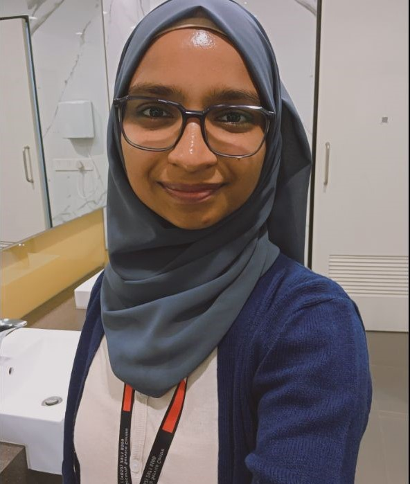

Dedicated Manual QA professional with over 3 years of experience in manual testing, automated test case execution using Tricentis Tosca, and database migration testing. Proficient in Agile methodologies and skilled in utilizing tools such as Jira, ALM Octane, Toad, and PL/SQL for effective test management and analysis. Demonstrated leadership as a team lead, with strong communication skills to address defects and anomalies with stakeholders. Currently expanding skill set by studying Web Development to transition into a development role in the future.
Senior System Associate, Infosys Ltd
June 17, 2021 – July 29, 2024
Worked as a Software Test Engineer for over 3 years, specializing in manual testing, automated test case execution, and database migration testing. Proficient in Agile methodologies.